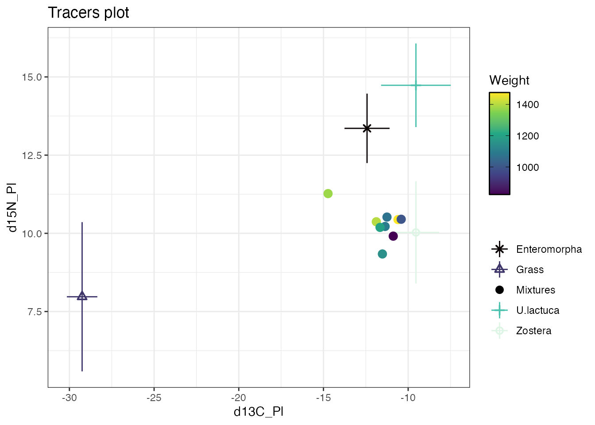
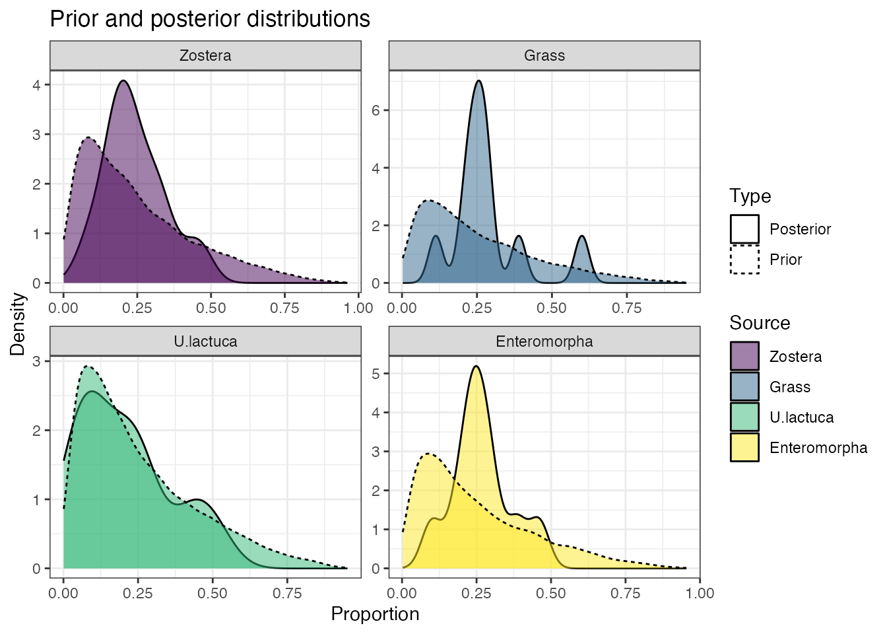
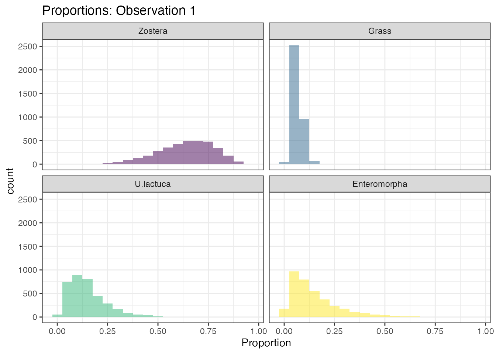
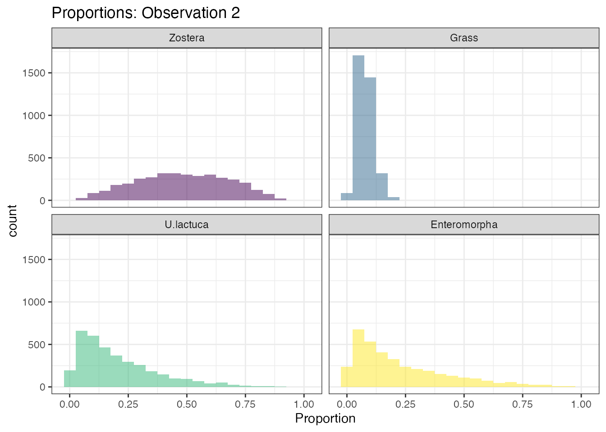

vignettes/cosimmr_quick_start.Rmd
cosimmr_quick_start.RmdSome geese isotope data is included with this package. Find where it is with:
system.file("extdata", "geese_data_small.xls", package = "cosimmr")Load into R with:
library(readxl)
path <- system.file("extdata", "geese_data_small.xls", package = "cosimmr")
geese_data <- lapply(excel_sheets(path), read_excel, path = path)If you want to see what the original Excel sheet looks like you can
run system(paste('open',path)).
We can now separate out the data into parts
targets <- geese_data[[1]]
sources <- geese_data[[2]]
TEFs <- geese_data[[3]]
concdep <- geese_data[[4]]Note that if you don’t have TEFs or concentration dependence you can just leave them blank in the step below.
cosimmr
Here we are using Weight as a covariate. data are inputted as matrices
Weight <- targets$`Net Wt`
geese_cosimmr <- cosimmr_load(
formula = as.matrix(targets[, 1:2]) ~ Weight,
source_names = sources$Sources,
source_means = as.matrix(sources[, 2:3]),
source_sds = as.matrix(sources[, 4:5]),
correction_means = as.matrix(TEFs[, 2:3]),
correction_sds = as.matrix(TEFs[, 4:5]),
concentration_means = as.matrix(concdep[, 2:3])
)
plot(geese_cosimmr, colour_by_cov = TRUE, cov_name = "Weight")
##Step 5: Run through cosimmr
geese_out = cosimmr_ffvb(geese_cosimmr)##Step 5: Look at the output Look at the influence of the prior:
prior_viz(geese_out)
Look at the histogram of the dietary proportions for observations 1 and 2:

For the many more options available to run and analyse output, see
the main vignette via vignette('cosimmr')